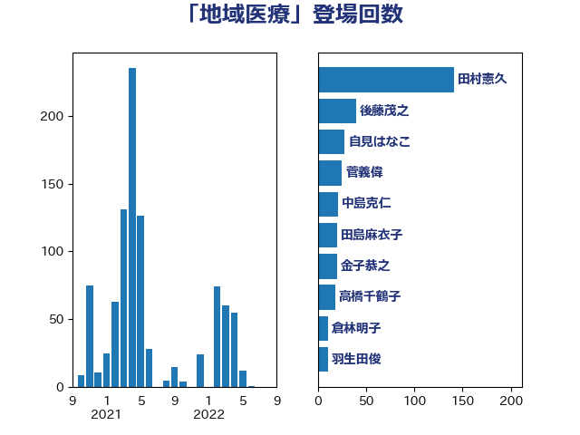

単語「地域医療」

| 田村憲久 | 自由民主党 | 141 回 |
| 後藤茂之 | 自由民主党 | 40 回 |
| 自見はなこ | 自由民主党 | 28 回 |
| 菅義偉 | 自由民主党 | 25 回 |
| 中島克仁 | 立憲民主党 | 21 回 |
| 田島麻衣子 | 立憲民主党 | 20 回 |
| 金子恭之 | 自由民主党 | 20 回 |
| 高橋千鶴子 | 日本共産党 | 18 回 |
| 倉林明子 | 日本共産党 | 11 回 |
| 羽生田俊 | 自由民主党 | 11 回 |
| 長谷川淳二 | 自由民主党 | 11 回 |
| 岸田文雄 | 自由民主党 | 10 回 |
| 田村まみ | 国民民主党 | 9 回 |
| こやり隆史 | 自由民主党 | 8 回 |
| 丸川珠代 | 自由民主党 | 8 回 |
| 塩川鉄也 | 日本共産党 | 8 回 |
| 田村智子 | 日本共産党 | 8 回 |
| 長妻昭 | 立憲民主党 | 8 回 |
| 伊藤岳 | 日本共産党 | 7 回 |
| 小池晃 | 日本共産党 | 7 回 |
| 打越さく良 | 立憲民主党 | 7 回 |
| 梅谷守 | 立憲民主党 | 7 回 |
| 三谷英弘 | 自由民主党 | 6 回 |
| 宮本徹 | 日本共産党 | 6 回 |
| 川田龍平 | 立憲民主党 | 6 回 |
| 本村伸子 | 日本共産党 | 6 回 |
| 萩生田光一 | 自由民主党 | 6 回 |
| 高木啓 | 自由民主党 | 6 回 |
| 梅村聡 | 日本維新の会 | 5 回 |
| 武田良太 | 自由民主党 | 5 回 |
| 西村康稔 | 自由民主党 | 5 回 |
| 西村智奈美 | 立憲民主党 | 5 回 |
| 古賀之士 | 立憲民主党 | 4 回 |
| 吉田統彦 | 立憲民主党 | 4 回 |
| 堂故茂 | 自由民主党 | 4 回 |
| 宮本岳志 | 日本共産党 | 4 回 |
| 橋本聖子 | 無所属 | 4 回 |
| 石井苗子 | 日本維新の会 | 4 回 |
| 石橋通宏 | 立憲民主党 | 4 回 |
| 竹内真二 | 公明党 | 4 回 |
| 菊田真紀子 | 立憲民主党 | 4 回 |
| 遠藤敬 | 日本維新の会 | 4 回 |
| 佐藤英道 | 公明党 | 3 回 |
| 山岡達丸 | 立憲民主党 | 3 回 |
| 山本博司 | 公明党 | 3 回 |
| 山添拓 | 日本共産党 | 3 回 |
| 岡本あき子 | 立憲民主党 | 3 回 |
| 斎藤洋明 | 自由民主党 | 3 回 |
| 熊田裕通 | 自由民主党 | 3 回 |
| 白石洋一 | 立憲民主党 | 3 回 |
| 芳賀道也 | 国民民主党 | 3 回 |
| 野間健 | 立憲民主党 | 3 回 |
| 下村博文 | 自由民主党 | 2 回 |
| 加藤勝信 | 自由民主党 | 2 回 |
| 坂本哲志 | 自由民主党 | 2 回 |
| 大島敦 | 立憲民主党 | 2 回 |
| 岩渕友 | 日本共産党 | 2 回 |
| 島村大 | 自由民主党 | 2 回 |
| 志位和夫 | 日本共産党 | 2 回 |
| 柚木道義 | 立憲民主党 | 2 回 |
| 渡辺孝一 | 自由民主党 | 2 回 |
| 牧義夫 | 立憲民主党 | 2 回 |
| 田畑裕明 | 自由民主党 | 2 回 |
| 石川香織 | 立憲民主党 | 2 回 |
| 福島みずほ | 社会民主党 | 2 回 |
| 鈴木庸介 | 立憲民主党 | 2 回 |
| おおつき紅葉 | 立憲民主党 | 1 回 |
| 三ッ林裕巳 | 自由民主党 | 1 回 |
| 丹羽秀樹 | 自由民主党 | 1 回 |
| 今枝宗一郎 | 自由民主党 | 1 回 |
| 伊佐進一 | 公明党 | 1 回 |
| 伊藤孝恵 | 国民民主党 | 1 回 |
| 伊藤渉 | 公明党 | 1 回 |
| 北村経夫 | 自由民主党 | 1 回 |
| 古賀篤 | 自由民主党 | 1 回 |
| 吉川元 | 立憲民主党 | 1 回 |
| 吉良よし子 | 日本共産党 | 1 回 |
| 国光あやの | 自由民主党 | 1 回 |
| 國重徹 | 公明党 | 1 回 |
| 塩田博昭 | 公明党 | 1 回 |
| 大西健介 | 立憲民主党 | 1 回 |
| 奥野総一郎 | 立憲民主党 | 1 回 |
| 小沢雅仁 | 立憲民主党 | 1 回 |
| 山下貴司 | 自由民主党 | 1 回 |
| 山田美樹 | 自由民主党 | 1 回 |
| 岸信夫 | 自由民主党 | 1 回 |
| 岸真紀子 | 立憲民主党 | 1 回 |
| 平木大作 | 公明党 | 1 回 |
| 杉尾秀哉 | 立憲民主党 | 1 回 |
| 東徹 | 日本維新の会 | 1 回 |
| 松川るい | 自由民主党 | 1 回 |
| 武部新 | 自由民主党 | 1 回 |
| 石田昌宏 | 自由民主党 | 1 回 |
| 稲富修二 | 立憲民主党 | 1 回 |
| 船橋利実 | 自由民主党 | 1 回 |
| 藤木眞也 | 自由民主党 | 1 回 |
| 西銘恒三郎 | 自由民主党 | 1 回 |
| 谷川とむ | 自由民主党 | 1 回 |
| 野田聖子 | 自由民主党 | 1 回 |
| 青木愛 | 立憲民主党 | 1 回 |